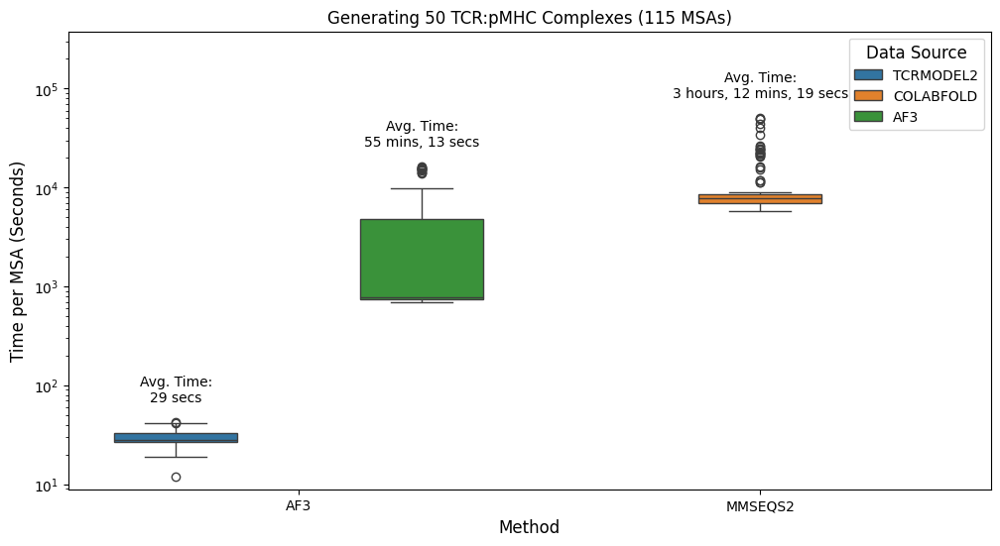
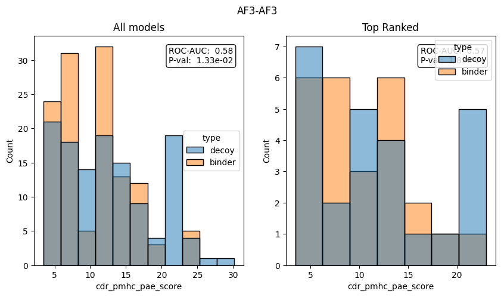
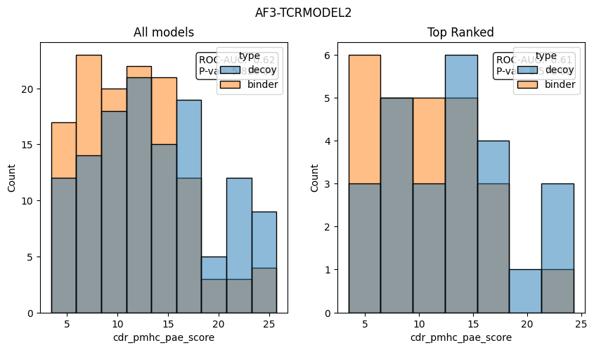
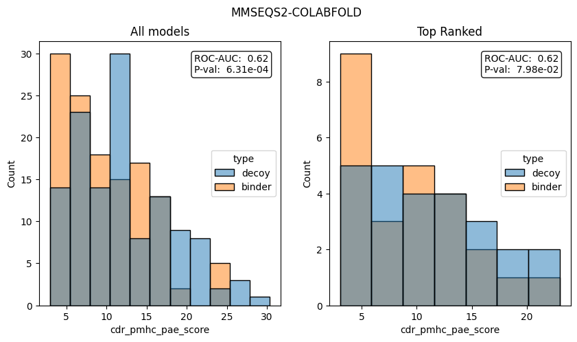
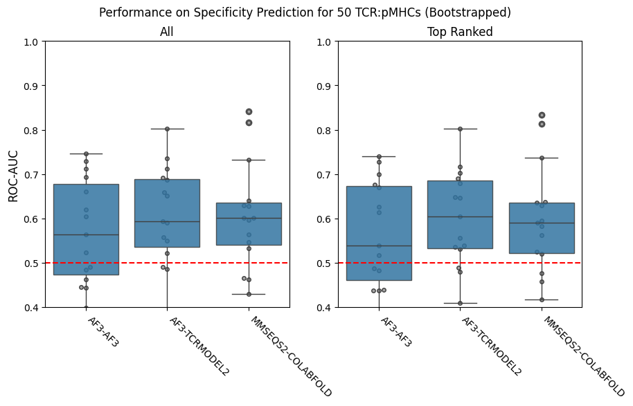
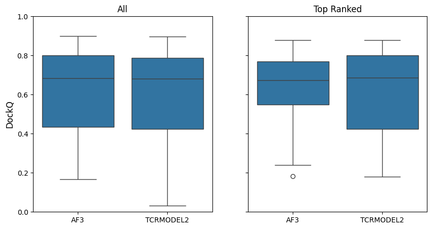
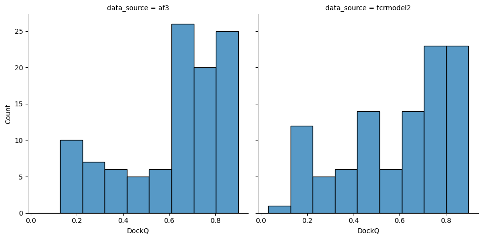
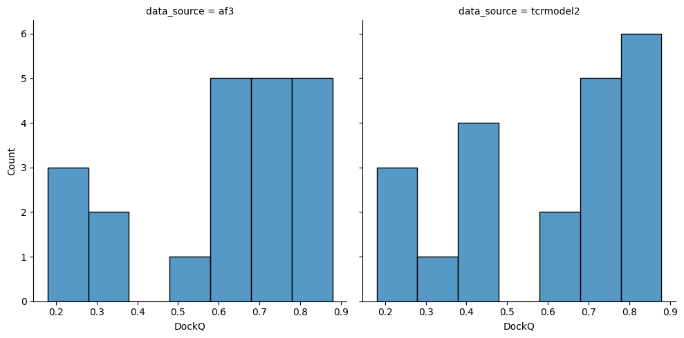
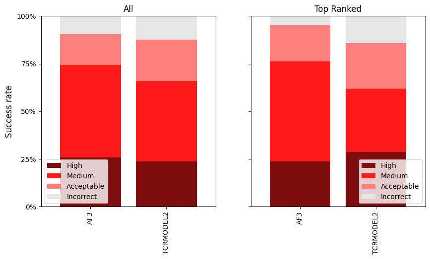

Compare MSA generation
[1]:
import collections
import glob
import itertools
import os
import re
import IPython.display as ipy_display
import matplotlib.pyplot as plt
import numpy as np
import pandas as pd
import pingouin as pg
import seaborn as sns
from matplotlib.axes import Axes
from matplotlib.ticker import PercentFormatter
from scipy import stats
from sklearn.metrics import roc_auc_score
[ ]:
sequences = pd.read_csv('../data/interim/sequences_sample_50.csv')
sequences['index'] = sequences['index'].apply(str)
sequences = sequences.set_index('index')
sequences['type'] = sequences['label'].map(lambda label: 'binder' if label else 'decoy')
[3]:
with open('../data/interim/sequence_key.txt') as fh:
sequence_key = {sequence: key for key, sequence in (line.split() for line in fh if line)}
[4]:
full_sequences = pd.read_csv('../data/interim/sequences_full.csv')
full_sequences['id'] = full_sequences['id'].apply(str)
full_sequences = full_sequences.set_index('id')
MSA generation time
[5]:
msa_ids = set(full_sequences.melt(ignore_index=False)['value'].map(sequence_key).dropna().loc[sequences.index].tolist())
[6]:
timings = []
for path in glob.glob('../data/benchmarks/msa-generation_*.tsv'):
method_info = re.search(
'msa-generation_(?P<msa_method>[a-zA-Z0-9]+)(?:_(?P<data_source>[a-zA-Z0-9]+))?_(?P<id>[a-zA-Z0-9]+).tsv',
os.path.basename(path),
).groupdict()
if method_info['msa_method'] not in ('af3', 'mmseqs2'):
continue
timing = pd.read_csv(path, delimiter='\t')
for key, val in method_info.items():
timing[key] = val
timings.append(timing)
timings = pd.concat(timings).reset_index(drop=True)
timings = timings[timings['id'].isin(msa_ids)].copy()
[ ]:
def format_time(seconds: int) -> str:
hours = seconds // 3600
minutes = (seconds % 3600) // 60
secs = seconds % 60
parts = []
if hours > 0:
parts.append(f'{int(hours)} hours')
if minutes > 0:
parts.append(f'{int(minutes)} mins')
if secs > 0 or not parts:
parts.append(f'{int(secs)} secs')
return ', '.join(parts)
[ ]:
plt.figure(figsize=(12, 6))
plt.title('Generating 50 TCR:pMHC Complexes (115 MSAs)')
ax = sns.boxplot(timings, y='s', x='msa_method', hue='data_source')
ax.set(yscale='log')
ax.set_xlabel('Method', fontsize=12)
ax.set_ylabel('Time per MSA (Seconds)', fontsize=12)
groups = timings.groupby(['msa_method', 'data_source'])
x_labels = [tick_label.get_text() for tick_label in ax.get_xticklabels()]
handles, hue_labels = ax.get_legend_handles_labels()
n_x = len(x_labels)
n_hue = len(hue_labels)
positions = np.arange(n_x)
total_width = 0.8
box_width = total_width / n_hue
for i, x_label in enumerate(x_labels):
for j, hue_label in enumerate(hue_labels):
if (x_label, hue_label) not in groups.groups:
continue
group = groups.get_group((x_label, hue_label))
x_pos = positions[i] - total_width / 2 + box_width * (j + 0.5)
ax.text(
x_pos,
group['s'].max() * 1.5,
f"Avg. Time:\n{format_time(group['s'].mean())}",
ha='center',
va='bottom',
)
leg = ax.legend(title='Data Source', title_fontsize=12)
for text in leg.get_texts():
text.set_text(text.get_text().upper())
ax.set_ylim(timings['s'].min() * 0.75, timings['s'].max() * 7.5)
ax.set_xticks(ax.get_xticks())
ax.set_xticklabels([label.get_text().upper() for label in ax.get_xticklabels()])
plt.show()

Antigen Specificity
[9]:
af3_af3_confidences = pd.read_csv('../data/processed/confidence_scores_af3_af3_af3_50.csv')
af3_af3_confidences['name'] = af3_af3_confidences['name'].astype(str)
af3_af3_confidences['msa_method'] = 'af3'
af3_af3_confidences['data_source'] = 'af3'
af3_af3_confidences['top_rank'] = False
af3_af3_confidences.loc[af3_af3_confidences.groupby('name')['ranking_score'].idxmax(), 'top_rank'] = True
af3_tcrmodel2_confidences = pd.read_csv('../data/processed/confidence_scores_af3_af3_tcrmodel2_50.csv')
af3_tcrmodel2_confidences['name'] = af3_tcrmodel2_confidences['name'].astype(str)
af3_tcrmodel2_confidences['msa_method'] = 'af3'
af3_tcrmodel2_confidences['data_source'] = 'tcrmodel2'
af3_tcrmodel2_confidences['top_rank'] = False
af3_tcrmodel2_confidences.loc[af3_tcrmodel2_confidences.groupby('name')['ranking_score'].idxmax(), 'top_rank'] = True
mmseqs2_colabfold_confidences = pd.read_csv('../data/processed/confidence_scores_af3_mmseqs2_colabfold_50.csv')
mmseqs2_colabfold_confidences['name'] = mmseqs2_colabfold_confidences['name'].astype(str)
mmseqs2_colabfold_confidences['msa_method'] = 'mmseqs2'
mmseqs2_colabfold_confidences['data_source'] = 'colabfold'
mmseqs2_colabfold_confidences['top_rank'] = False
mmseqs2_colabfold_confidences.loc[
mmseqs2_colabfold_confidences.groupby('name')['ranking_score'].idxmax(), 'top_rank'
] = True
confidences = pd.concat([af3_af3_confidences, af3_tcrmodel2_confidences, mmseqs2_colabfold_confidences])
[10]:
confidences = confidences.merge(sequences, how='left', left_on='name', right_on='index')
[11]:
for name, group in confidences.groupby(['msa_method', 'data_source']):
fig, (ax1, ax2) = plt.subplots(1, 2, figsize=(10, 5))
fig.suptitle('-'.join(name).upper())
sns.histplot(group, x='cdr_pmhc_pae_score', hue='type', ax=ax1)
ax1.set_title('All models')
roc_auc = 1 - roc_auc_score(group['label'], group['cdr_pmhc_pae_score'])
stat, p_val = stats.ranksums(
group.query("type == 'binder'")['cdr_pmhc_pae_score'],
group.query("type == 'decoy'")['cdr_pmhc_pae_score'],
alternative='less',
)
ax1.text(
0.95,
0.95,
f'ROC-AUC: {roc_auc: .2f}\nP-val: {p_val: .2e}',
transform=ax1.transAxes,
verticalalignment='top',
horizontalalignment='right',
bbox={'boxstyle': 'round', 'facecolor': 'white', 'alpha': 0.90},
)
group_top_rank = group.query('top_rank')
sns.histplot(group_top_rank, x='cdr_pmhc_pae_score', hue='type', ax=ax2)
ax2.set_title('Top Ranked')
roc_auc_top_rank = 1 - roc_auc_score(group_top_rank['label'], group_top_rank['cdr_pmhc_pae_score'])
stat_top_rank, p_val_top_rank = stats.ranksums(
group_top_rank.query("type == 'binder'")['cdr_pmhc_pae_score'],
group_top_rank.query("type == 'decoy'")['cdr_pmhc_pae_score'],
alternative='less',
)
ax2.text(
0.95,
0.95,
f'ROC-AUC: {roc_auc_top_rank: .2f}\nP-val: {p_val_top_rank: .2e}',
transform=ax2.transAxes,
verticalalignment='top',
horizontalalignment='right',
bbox={'boxstyle': 'round', 'facecolor': 'white', 'alpha': 0.90},
)



[12]:
NUM_SAMPLES = 15
SAMPLE_SIZE = 20
rng = np.random.default_rng(123)
structure_names = sorted(confidences['name'].unique())
roc_aucs = {
'sample_number': [],
'msa_method': [],
'data_source': [],
'roc_auc': [],
'roc_auc_top': [],
}
for sample_number in range(1, NUM_SAMPLES + 1):
sampled_structure_names = rng.choice(structure_names, SAMPLE_SIZE, replace=False)
for (msa_method, data_source), group in confidences.groupby(['msa_method', 'data_source']):
sample = group[group['name'].isin(sampled_structure_names)]
sample_top_rank = sample.query('top_rank')
roc_aucs['sample_number'].append(sample_number)
roc_aucs['msa_method'].append(msa_method)
roc_aucs['data_source'].append(data_source)
roc_aucs['roc_auc'].append(1 - roc_auc_score(sample['label'], sample['cdr_pmhc_pae_score']))
roc_aucs['roc_auc_top'].append(
1 - roc_auc_score(sample_top_rank['label'], sample_top_rank['cdr_pmhc_pae_score'])
)
roc_aucs = pd.DataFrame(roc_aucs)
[13]:
roc_aucs = roc_aucs.melt(
id_vars=['sample_number', 'msa_method', 'data_source'],
value_vars=['roc_auc', 'roc_auc_top'],
var_name='type',
value_name='score',
)
roc_aucs['type'] = roc_aucs['type'].map({'roc_auc': 'all', 'roc_auc_top': 'top'})
[14]:
roc_aucs['msa_method_data_source'] = roc_aucs['msa_method'] + '-' + roc_aucs['data_source']
[ ]:
fig, axes = plt.subplots(1, 2, figsize=(10, 5))
fig.suptitle('Performance on Specificity Prediction for 50 TCR:pMHCs (Bootstrapped)', fontsize=12)
for i, (ax, data, title) in enumerate(
zip(axes, (roc_aucs.query("type == 'all'"), roc_aucs.query("type == 'top'")), ('All', 'Top Ranked'), strict=True)
):
ax.set_title(title)
sns.swarmplot(
data,
x='msa_method_data_source',
y='score',
color='grey',
zorder=1,
marker='o',
size=4,
edgecolor='black',
linewidth=1,
alpha=0.70,
ax=ax,
)
sns.boxplot(data, x='msa_method_data_source', y='score', boxprops={'alpha': 0.85}, ax=ax)
ax.axhline(0.5, color='red', linestyle='dashed')
ax.set_ylim((0.40, 1.0))
ax.set_ylabel('ROC-AUC' if i == 0 else '', fontsize=12)
ax.set_xlabel('')
ax.set_xticks(ax.get_xticks())
ax.set_xticklabels([label.get_text().upper() for label in ax.get_xticklabels()], rotation=-45, ha='left')
plt.show()

[ ]:
def statistics_normal(data: pd.DataFrame, metric_name: str) -> tuple[pd.DataFrame, pd.DataFrame]:
overall = pg.anova(data, dv=metric_name, between='msa_method_data_source')
groups = list(data.groupby('msa_method_data_source')[metric_name])
significance_level = 0.05 / len(groups)
post_hoc = collections.defaultdict(list)
for (group1_name, group1), (group2_name, group2) in itertools.combinations(groups, 2):
stat, p_val = stats.ttest_ind(group1, group2, alternative='two-sided')
post_hoc['group1'].append(group1_name)
post_hoc['group2'].append(group2_name)
post_hoc['stat'].append(stat)
post_hoc['p_val'].append(p_val)
post_hoc['signficant'].append(p_val < significance_level)
return overall, pd.DataFrame(post_hoc)
[17]:
for data, title in zip(
(roc_aucs.query("type == 'all'"), roc_aucs.query("type == 'top'")), ('All', 'Top Ranked'), strict=True
):
print(title)
overall, post_hoc = statistics_normal(data, 'score')
ipy_display.display(overall)
ipy_display.display(post_hoc)
print()
All
| Source | ddof1 | ddof2 | F | p-unc | np2 | |
|---|---|---|---|---|---|---|
| 0 | msa_method_data_source | 2 | 42 | 0.465424 | 0.631068 | 0.021683 |
| group1 | group2 | stat | p_val | signficant | |
|---|---|---|---|---|---|
| 0 | af3-af3 | af3-tcrmodel2 | -0.874311 | 0.389386 | False |
| 1 | af3-af3 | mmseqs2-colabfold | -0.791079 | 0.435548 | False |
| 2 | af3-tcrmodel2 | mmseqs2-colabfold | 0.050861 | 0.959798 | False |
Top Ranked
| Source | ddof1 | ddof2 | F | p-unc | np2 | |
|---|---|---|---|---|---|---|
| 0 | msa_method_data_source | 2 | 42 | 0.468458 | 0.629198 | 0.021821 |
| group1 | group2 | stat | p_val | signficant | |
|---|---|---|---|---|---|
| 0 | af3-af3 | af3-tcrmodel2 | -0.869961 | 0.391719 | False |
| 1 | af3-af3 | mmseqs2-colabfold | -0.798502 | 0.431300 | False |
| 2 | af3-tcrmodel2 | mmseqs2-colabfold | 0.024643 | 0.980515 | False |
DockQ
[ ]:
CAPRI_ACCEPTABLE_CUTOFF = 0.23
CAPRI_MEDIUM_CUTOFF = 0.49
CAPRI_HIGH_CUTOFF = 0.80
def get_capri_classification(dockq: float) -> str:
if dockq < CAPRI_ACCEPTABLE_CUTOFF:
return 'Incorrect'
if CAPRI_ACCEPTABLE_CUTOFF <= dockq < CAPRI_MEDIUM_CUTOFF:
return 'Acceptable'
if CAPRI_MEDIUM_CUTOFF <= dockq < CAPRI_HIGH_CUTOFF:
return 'Medium'
return 'High'
[19]:
af3_af3_dockq_scores = pd.read_csv('../data/processed/predicted_af3_af3_af3_dockq_benchmark.csv')
af3_af3_dockq_scores['name'] = af3_af3_dockq_scores['name'].astype(str)
af3_af3_dockq_scores['msa_method'] = 'af3'
af3_af3_dockq_scores['data_source'] = 'af3'
af3_af3_confidence_scores_benchmark = pd.read_csv('../data/interim/confidence_scores_af3_af3_af3_benchmark.csv')
af3_af3_confidence_scores_benchmark['top_rank'] = False
af3_af3_confidence_scores_benchmark.loc[
af3_af3_confidence_scores_benchmark.groupby('name')['ranking_score'].idxmax(), 'top_rank'
] = True
af3_af3_dockq_scores = af3_af3_dockq_scores.merge(
af3_af3_confidence_scores_benchmark, how='inner', on=['name', 'seed', 'sample']
)
af3_tcrmodel2_dockq_scores = pd.read_csv('../data/processed/predicted_af3_af3_tcrmodel2_dockq_benchmark.csv')
af3_tcrmodel2_dockq_scores['name'] = af3_tcrmodel2_dockq_scores['name'].astype(str)
af3_tcrmodel2_dockq_scores['msa_method'] = 'af3'
af3_tcrmodel2_dockq_scores['data_source'] = 'tcrmodel2'
af3_tcrmodel2_confidence_scores_benchmark = pd.read_csv(
'../data/interim/confidence_scores_af3_af3_tcrmodel2_benchmark.csv'
)
af3_tcrmodel2_confidence_scores_benchmark['top_rank'] = False
af3_tcrmodel2_confidence_scores_benchmark.loc[
af3_tcrmodel2_confidence_scores_benchmark.groupby('name')['ranking_score'].idxmax(), 'top_rank'
] = True
af3_tcrmodel2_dockq_scores = af3_tcrmodel2_dockq_scores.merge(
af3_tcrmodel2_confidence_scores_benchmark, how='inner', on=['name', 'seed', 'sample']
)
dockq_scores = pd.concat([af3_af3_dockq_scores, af3_tcrmodel2_dockq_scores]).reset_index(drop=True)
[ ]:
dockq_scores['capri_classification'] = dockq_scores['DockQ'].map(get_capri_classification)
[ ]:
fig, axes = plt.subplots(1, 2, figsize=(10, 5))
axes[0].set_title('All')
sns.boxplot(dockq_scores.sort_values('data_source'), y='DockQ', x='data_source', ax=axes[0])
axes[0].set_ylim(0, 1)
axes[0].set_ylabel(axes[0].get_ylabel(), fontsize=12)
axes[0].set_xticks(axes[0].get_xticks())
axes[0].set_xticklabels([label.get_text().upper() for label in axes[0].get_xticklabels()])
axes[0].set_xlabel('')
axes[1].set_title('Top Ranked')
sns.boxplot(dockq_scores.sort_values('data_source').query('top_rank'), y='DockQ', x='data_source', ax=axes[1])
axes[1].set_ylim(0, 1)
axes[1].set_ylabel('')
axes[1].set_yticklabels([])
axes[1].set_xticks(axes[1].get_xticks())
axes[1].set_xticklabels([label.get_text().upper() for label in axes[1].get_xticklabels()])
axes[1].set_xlabel('')
plt.show()

[22]:
sns.displot(dockq_scores.sort_values('data_source'), x='DockQ', col='data_source', kind='hist')
plt.show()
sns.displot(dockq_scores.query('top_rank').sort_values('data_source'), x='DockQ', col='data_source', kind='hist')
plt.show()


[ ]:
def get_significance(dockq_scores: pd.DataFrame) -> tuple[float, float]:
(_, group_af3), (_, group_tcrmodel2) = (
dockq_scores.sort_values(['data_source', 'name', 'seed', 'sample'])
.set_index(['name', 'seed', 'sample'])
.groupby('data_source')
)
comparison = group_af3.merge(
group_tcrmodel2, how='inner', left_index=True, right_index=True, suffixes=('_af3', '_tcrmodel2')
)
stat, p_val = stats.wilcoxon(comparison['DockQ_af3'].fillna(0.0), comparison['DockQ_tcrmodel2'].fillna(0.0))
return stat, p_val
print('All p-value:', get_significance(dockq_scores)[1])
print('Top Ranked p-value:', get_significance(dockq_scores.query('top_rank'))[1])
All p-value: 0.17274406431673273
Top Ranked p-value: 0.5185546875
[ ]:
def plot_capri_classification(dockq_scores: pd.DataFrame, ax: Axes | None = None) -> Axes:
capri_classification = (
dockq_scores.groupby('data_source')['capri_classification'].value_counts(normalize=True) * 100
)
capri_classification.name = 'percent'
capri_classification = capri_classification.reset_index()
capri_classification = capri_classification.pivot_table(
index='data_source', columns='capri_classification', values='percent'
)
order = ['High', 'Medium', 'Acceptable', 'Incorrect']
colours = {
'High': '#7f0d0d',
'Medium': '#ff1a1a',
'Acceptable': '#ff7f7f',
'Incorrect': '#e6e6e6',
}
plot_ax = capri_classification.reindex(columns=order, fill_value=0).plot(
kind='bar', stacked=True, color=[colours[col_name] for col_name in order], width=0.8, edgecolor='none', ax=ax
)
plot_ax.set_ylim(0, 100)
plot_ax.yaxis.set_major_formatter(PercentFormatter(xmax=100))
plot_ax.set_ylabel('Success rate', fontsize=12)
plot_ax.set_yticks([0, 25, 50, 75, 100])
plot_ax.set_xlabel('')
plot_ax.set_xticklabels([label.get_text().upper() for label in plot_ax.get_xticklabels()])
plot_ax.legend(title='')
return plot_ax
fig, axes = plt.subplots(1, 2, figsize=(10, 5))
axes[0].set_title('All')
plot_capri_classification(dockq_scores, ax=axes[0])
axes[1].set_title('Top Ranked')
plot_capri_classification(dockq_scores.query('top_rank'), ax=axes[1])
axes[1].set_yticklabels([])
axes[1].set_ylabel('')
plt.show()
